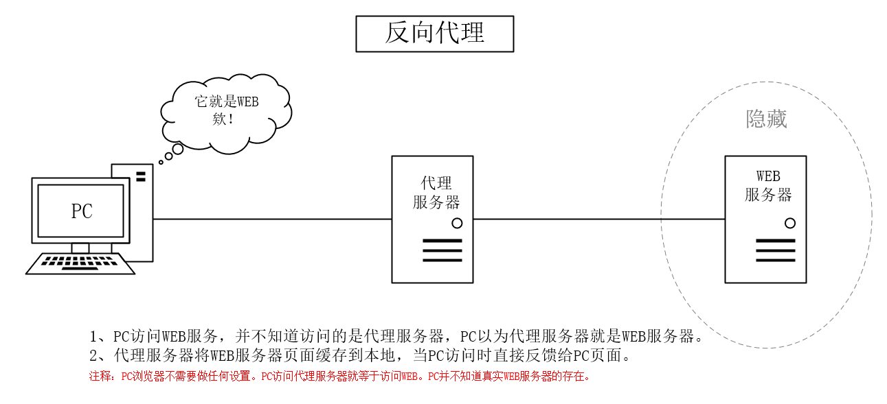

- 接口和抽象类区别
- java的异常有哪几类， 如何使用
- 常用的集合类有哪些， List 如何排序
- ArrayList Linked List 内部实现是如何的
- 内存溢出是怎么回事， 举个例子
- Hashmap实现原理， 如何保证线程安全
- Java 一个字符几个字节， 扩展int long double float
- final finally finalize 区别
- session Cookie 区别
- String SBuffer stringbulider 区别，实现
- 什么叫序列化， 如何实现序列化， 实例
- String s = new String(“abc”) 创建了几个String Object
- 代理
- 如何实现一个HashTable， 设计如何考虑hash 冲突， 如何优化
- TODO
介绍几个java 基础的问题
接口和抽象类区别
- 接口都是抽象方法，
- 抽象类有抽象也有实际的。 可以有默认的实现； 不能有构造器； 只能public 不能别的。
- 使用
如果你想用一些方法并且可以有一些默认实现， 抽象类。
如果多重继承， 必须接口， java 没有多继承。
java的异常有哪几类， 如何使用
大类 throwable，
- Error Error 用来指示运行时环境发生的错误。例如，JVM 内存溢出。一般地，程序不会从错误中恢复。
- Exception
- IOexception
- RuntimeException
- 还有很多。
可以多重来捕获。
自己可以定义， 然后多个来弄这个东西。
所以结论是，Exception的处理并没有死规矩。何时用什么样的异常，是一个需要大量的实际项目积累、试错才能有把握做好的事情。
常用的集合类有哪些， List 如何排序
vector hashtable hashset
arraylist hashmap
concurrenthashset、map
List 如何排序1
2
3
4
5
6
7
8
9
10
11
12
13
14
15
16
17
18Collections.sort(plist, new Comparator<Person>(){
/*
* int compare(Person p1, Person p2) 返回一个基本类型的整型，
* 返回负数表示：p1 小于p2，
* 返回0 表示：p1和p2相等，
* 返回正数表示：p1大于p2
*/
public int compare(Person p1, Person p2) {
//按照Person的年龄进行升序排列
if(p1.getAge() > p2.getAge()){
return 1;
}
if(p1.getAge() == p2.getAge()){
return 0;
}
return -1;
}
});
https://www.cnblogs.com/wangyayun/p/7852075.html
ArrayList Linked List 内部实现是如何的
ArrayList实现了List接口,它是以数组的方式来实现的,数组的特性是可以使用索引的方式来快速定位对象的位置,因此对于快速的随机取得对象的需求,使用ArrayList实现执行效率上会比较好.
LinkedList是采用链表的方式来实现List接口的,它本身有自己特定的方法，如: addFirst(),addLast(),getFirst(),removeFirst()等. 由于是采用链表实现的,因此在进行insert和remove动作时在效率上要比ArrayList要好得多!适合用来实现Stack(堆栈)与Queue(队列),前者先进后出，后者是先进先出.
3、如果要使用队列的功能,由于LinkedList也实现了java.util.Queue接口,所以可以直接使用LinkedList的实例来实现.
四、在删除可插入对象的动作时，为什么ArrayList的效率会比较低呢?
因为ArrayList是使用数组实现的,若要从数组中删除或插入某一个对象，需要移动后段的数组元素，从而会重新调整索引顺序,调整索引顺序会消耗一定的时间，
内存溢出是怎么回事， 举个例子
- 内存不够用， 例子。 你读个object， 创建多个。
- 可以把heap 设置小一些
- 栈的话， 死循环， 自己就报了。
Hashmap实现原理， 如何保证线程安全
在讨论哈希表之前，我们先大概了解下其他数据结构在新增，查找等基础操作执行性能
- 数组：采用一段连续的存储单元来存储数据。对于指定下标的查找，时间复杂度为O(1)；通过给定值进行查找，需要遍历数组，逐一比对给定关键字和数组元素，时间复杂度为O(n)，当然，对于有序数组，则可采用二分查找，插值查找，斐波那契查找等方式，可将查找复杂度提高为O(logn)；对于一般的插入删除操作，涉及到数组元素的移动，其平均复杂度也为O(n)
- 线性链表：对于链表的新增，删除等操作（在找到指定操作位置后），仅需处理结点间的引用即可，时间复杂度为O(1)，而查找操作需要遍历链表逐一进行比对，复杂度为O(n)
- 二叉树：对一棵相对平衡的有序二叉树，对其进行插入，查找，删除等操作，平均复杂度均为O(logn)。
- 哈希表：相比上述几种数据结构，在哈希表中进行添加，删除，查找等操作，性能十分之高，不考虑哈希冲突的情况下，仅需一次定位即可完成，时间复杂度为O(1)，接下来我们就来看看哈希表是如何实现达到惊艳的常数阶O(1)的。
关于Hashmap
- 数据结构的物理存储结构只有两种：顺序存储结构和链式存储结构（像栈，队列，树，图等是从逻辑结构去抽象的，映射到内存中，也这两种物理组织形式），而在上面我们提到过，在数组中根据下标查找某个元素，一次定位就可以达到，哈希表利用了这种特性，哈希表的主干就是数组。
- 就是一个函数关系， 可以找到key 和地址之间的关联。对于hash冲突。 哈希冲突的解决方案有多种:开放定址法（发生冲突，继续寻找下一块未被占用的存储地址），再散列函数法，链地址法，而HashMap即是采用了链地址法，也就是数组+链表的方式，
为何HashMap的数组长度一定是2的次幂？
- resize transfer
- 第一要看如何扩容， 第二看以前老的如果过渡过去。 扩容之后就只有一位的差异了。 大大减少了之前已经散列良好的老数组的数据位置重新调换
，当元素个数达到数组大小loadFactor后会扩大数组的大小，在默认情况下，数组大小为16，loadFactor为0.75，也就是说当HashMap中的元素超过16\0.75=12时，会把数组大小扩展为2*16=32
hashmap的线程安全
- 面试官有问到HashMap是否是线程安全的，如何在线程安全的前提下使用HashMap,其实也就是HashMap，Hashtable，ConcurrentHashMap和synchronized Map的原理和区别。当时有些紧张只是简单说了下HashMap不是线程安全的；Hashtable线程安全，但效率低，因为是Hashtable是使用synchronized的，所有线程竞争同一把锁；而ConcurrentHashMap不仅线程安全而且效率高，因为它包含一个segment数组，将数据分段存储，给每一段数据配一把锁，也就是所谓的锁分段技术。
- 其实答得还可以了，
- 如何线程安全的用呢。
1 | - Hashtable |
SynchronizedMap 真的有这个类啊 。
TODO later
Java 一个字符几个字节， 扩展int long double float
这个要看编码
- UTF-8 泛泛的理解 2个。 一个字节8个bit
- UTF-8是变长1-4字节的，汉字有可能是三字节或四字节。
- new String(“字”).getBytes().length 试试
- int 四个字节； long 8个字节； double 也是8个；
- float 4个； byte 是一个。
- boolean –一个？ It’s virtual machine dependent. Snu used 4 bytes for boolean
final finally finalize 区别
- final 是修饰方法， 变量。 不能修改。
- finally 是try catch的处理
- finalize 是gc。 但是不保证什么时候执行。
session Cookie 区别
- Http协议是无状态的协议, 每一次请求都是独立的. 服务端无法区分不同浏览器, 不同客户端的请求有什么不同.
- 实际B/S架构中, 是需要区别不同访客和请求的. 这就需要保存”状态”.
- Cookie和Session机制就是为了解决和弥补Http协议无状态问题而生.
- Cookie是一种在客户端(浏览器端)保存状态的方案.
- Session是一种在服务端保存状态的方案.
1，session 在服务器端，cookie 在客户端（浏览器）
2，session 默认被存在在服务器的一个文件里（不是内存）
++3，session 的运行依赖 session id，而 session id 是存在 cookie 中的，也就是说，如果浏览器禁用了 cookie ，同时 session 也会失效（但是可以通过其它方式实现，比如在 url 中传递 session_id）++
4，session 可以放在 文件、数据库、或内存中都可以。
5，用户验证这种场合一般会用 session
TODO web
String SBuffer stringbulider 区别，实现
- 每次string 都会创建新的， 所以如果大量的字符串拼接用包装类， 简单的用stirng 好了
- 一般用builder。 如果安全要用buffer
- public final class String
- “对String对象的任何改变都不影响到原对象，相关的任何change操作都会生成新的对象”。
- 1.String str=”hello world”和String str=new String(“hello world”)的区别
前者有可能在常量池里面有， 就不会是新创建， 后者是新创建。JVM执行引擎会先在运行时常量池查找是否存在相同的字面常量，如果存在，则直接将引用指向已经存在的字面常量；否则在运行时常量池开辟一个空间来存储该字面常量，并将引用指向该字面常量。
StringBuilder并没有对方法进行加同步锁，所以是非线程安全的。 - 常用的。
- 只是StringBuffer会在方法上加synchronized关键字，进行同步。 考虑的多一些
- 最后，如果程序不是多线程的，那么使用StringBuilder效率高于StringBuffer。
什么叫序列化， 如何实现序列化， 实例
java 的序列化是说对象可以转化成可以传输的形式。
对象在堆里， 如果jvm 停， 就没有了。
- java.io.Serializable
- java.io.Externalizable
- ObjectOutput
- ObjectInput
- ObjectOutputStream
- ObjectInputStream
Externalizable继承了Serializable，该接口中定义了两个抽象方法：writeExternal()与readExternal()。当使用Externalizable接口来进行序列化与反序列化的时候需要开发人员重写writeExternal()与readExternal()方法
Transient 关键字
Transient 关键字的作用是控制变量的序列化，在变量声明前加上该关键字，可以阻止该变量被序列化到文件中序列化ID
虚拟机是否允许反序列化，不仅取决于类路径和功能代码是否一致，一个非常重要的一点是两个类的序列化 ID 是否一致（就是 private static final long serialVersionUID)
序列化 ID 在 Eclipse 下提供了两种生成策略，一个是固定的 1L，一个是随机生成一个不重复的 long 类型数据（实际上是使用 JDK 工具生成），在这里有一个建议，如果没有特殊需求，就是用默认的 1L 就可以，这样可以确保代码一致时反序列化成功。那么随机生成的序列化 ID 有什么作用呢，有些时候，通过改变序列化 ID 可以用来限制某些用户的使用。
refer
String s = new String(“abc”) 创建了几个String Object
- 而这道题目让人混淆的地方就是这里，这段代码在运行期间确实只创建了一个对象，即在堆上创建了”abc”对象。而为什么大家都在说是2个对象呢，这里面要澄清一个概念 该段代码执行过程和类的加载过程是有区别的。在类加载的过程中，确实在运行时常量池中创建了一个”abc”对象，而在代码执行过程中确实只创建了一个String对象。
因此，这个问题如果换成 String str = new String(“abc”)涉及到几个String对象？合理的解释是2个。
个人觉得在面试的时候如果遇到这个问题，可以向面试官询问清楚”是这段代码执行过程中创建了多少个对象还是涉及到多少个对象“再根据具体的来进行回答。
1）
问题：
String s = new String(“xyz”);
在运行时涉及几个String实例？
一种合理的解答是：
引用
答案：两个，一个是字符串字面量”xyz”所对应的、驻留（intern）在一个全局共享的字符串常量池中的实例，另一个是通过new String(String)创建并初始化的、内容与”xyz”相同的实例
http://rednaxelafx.iteye.com/blog/774673/
代理
正向代理
正向代理（forward proxy）：是一个位于客户端和目标服务器之间的服务器(代理服务器)，为了从目标服务器取得内容，客户端向代理服务器发送一个请求并指定目标，然后代理服务器向目标服务器转交请求并将获得的内容返回给客户端。客户端必须要进行一些特别的配置才能使用正向代理。一般情况下，如果没有特别说明，代理技术默认是指正向代理技术。
在通过正向代理服务器的时候，目标服务器是不知道真正的客户端是谁的，只知道是代理服务器在发送请求。
- 用途 突破访问限制 通过代理服务器，可以突破自身IP访问限制，访问国外网站，教育网等。


反向代理
- 反向代理（reverse proxy）：是指以代理服务器来接受internet上的连接请求，然后将请求转发给内部网络上的服务器，并将从服务器上得到的结果返回给internet上请求连接的客户端，此时代理服务器对外就表现为一个反向代理服务器。
- 反向代理的用途
隐藏服务器真实IP 使用反向代理，可以对客户端隐藏服务器的IP地址。
负载均衡 反向代理服务器可以做负载均衡，根据所有真实服务器的负载情况，将客户端请求分发到不同的真实服务器上。
提高访问速度 反向代理服务器可以对于静态内容及短时间内有大量访问请求的动态内容提供缓存服务，提高访问速度。
提供安全保障 反向代理服务器可以作为应用层防火墙，为网站提供对基于Web的攻击行为（例如DoS/DDoS）的防护，更容易排查恶意软件等。还可以为后端服务器统一提供加密和SSL加速（如SSL终端代理），提供HTTP访问认证等。


java 静态代理
Java中的静态代理
所谓静态代理，就是代理类是由程序员自己编写的，在编译期就确定好了的。来看下下面的例子：
1 | public interface HelloSerivice { |
上面的代码比较简单，定义了一个接口和其实现类。这就是代理模式中的目标对象和目标对象的接口。接下类定义代理对象。
1 | public class HelloSeriviceProxy implements HelloSerivice{ |
上面就是一个代理类，他也实现了目标对象的接口，并且扩展了say方法。下面是一个测试类：
1 | public class Main { |
// 记录日志
// hello world
// 清理数据
这就是一个简单的静态的代理模式的实现。代理模式中的所有角色（代理对象、目标对象、目标对象的接口）等都是在编译期就确定好的。
静态代理的用途
- 控制真实对象的访问权限 通过代理对象控制对真实对象的使用权限。
- 避免创建大对象 通过使用一个代理小对象来代表一个真实的大对象，可以减少系统资源的消耗，对系统进行优化并提高运行速度。
- 增强真实对象的功能 这个比较简单，通过代理可以在调用真实对象的方法的前后增加额外功能。
动态代理
前面介绍了静态代理，虽然静态代理模式很好用，但是静态代理还是存在一些局限性的，比如使用静态代理模式需要程序员手写很多代码，这个过程是比较浪费时间和精力的。一旦需要代理的类中方法比较多，或者需要同时代理多个对象的时候，这无疑会增加很大的复杂度。
1、JDK动态代理：java.lang.reflect 包中的Proxy类和InvocationHandler接口提供了生成动态代理类的能力。
2、Cglib动态代理：Cglib (Code Generation Library )是一个第三方代码生成类库，运行时在内存中动态生成一个子类对象从而实现对目标对象功能的扩展。
Cglib是一个强大的高性能的代码生成包，它可以在运行期扩展Java类与实现Java接口。它广泛的被许多AOP的框架使用，例如Spring AOP和dynaop，为他们提供方法的interception（拦截）
Cglib包的底层是通过使用一个小而快的字节码处理框架ASM，来转换字节码并生成新的类。不鼓励直接使用ASM，因为它需要你对JVM内部结构包括class文件的格式和指令集都很熟悉。
如何实现一个HashTable， 设计如何考虑hash 冲突， 如何优化
hashtable 区别
hashtable 不允许null。 map云顺序
- map 线程不安全
- 4、Hashtable继承自Dictionary，HashMap继承自AbstractMap。
如何构造
因为是散列， 其实就是如何构造这个关系。
- hash function：
哈希表是一种通过 keys 对 value 的映射，来实现数据访问的数据结构，而这种映射一般分为两个阶段：
1）将关键字 key 作为自变量， 通过一定的函数关系，计算出的因变量作为 value 的索引（index） 2）如果该索引指向的空间上没有存储数据，则将 value 插入，否则，称为产生了一个冲突（collision），需要对冲突进行处理，之后找到新的没有数据的空间，再将 value 插入
// 这种函数关系是通过哈希函数（hash function）来实现的, 即将任意长度的数据映射为较短的固定长度的数据，该数据（也就是 index）也被称为哈希值（hash values / hash codes） - collision resolution：
冲突处理，当key的集合很大的时候，根据生日问题（birthday problem）原理，哈希冲突实际上是不可避免的，所以几乎所有的哈希表都会有对于冲突的解决策略，常见的方法有三种;- 开放寻址法：
- 还是关于继续加么
- 再散列。 就是继续做一次散列。 好处不容易聚焦， 增加了计算时间
3 链地址法， 拉链发。 因为是链表么， 所以继续再加一个连。
优点：
拉链法处理冲突简单，且无堆积现象，即非同义词决不会发生冲突，因此平均查找长度较短；
在用拉链法构造的散列表中，删除结点的操作易于实现
缺点：
在对链表进行存储空间分配的时候，会降低整个程序的运行速率
4. 建立一个公共溢出区。
可以参考。 https://my.oschina.net/NGINX08/blog/111655
todo
- http://wiki.jikexueyuan.com/project/java-collection/hashmap.html 几种集合源码导读
- https://www.jianshu.com/p/526970086e4e
- hash 冲突 http://www.cnblogs.com/zhousysu/p/5483932.html
- hashmap http://yikun.github.io/2015/04/01/Java-HashMap%E5%B7%A5%E4%BD%9C%E5%8E%9F%E7%90%86%E5%8F%8A%E5%AE%9E%E7%8E%B0/
- hashmap 性能 http://www.importnew.com/14417.html
https://www.jianshu.com/p/7e7f52a49ffc
TODO
- 注解
- 反射
- 泛型
http://www.hollischuang.com/archives/230 - 代理 java 代理 Cglib